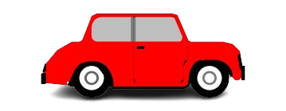

🎯 Percobaan: Mobil di Permukaan Berbeda
Perhatikan bagaimana gaya gesek mempengaruhi gerak mobil!
ASPAL

📊 Data Pengamatan
Permukaan:
-
Waktu Tempuh:
-
Gaya Gesek:
-
Status:
Siap
💡 Kesimpulan
Gaya gesek di aspal lebih kecil sehingga mobil bergerak lebih cepat dan jauh.
Gaya gesek di tanah lebih besar sehingga mobil bergerak lebih lambat dan berhenti lebih cepat.